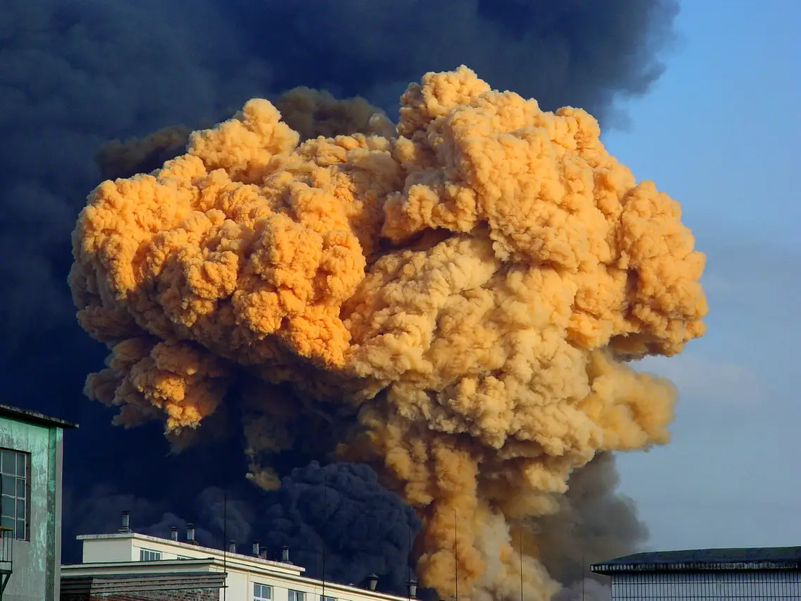

Man-Made Disasters: Be Prepared, Be Resilient
Welcome to our Man-Made Disasters Information Hub. In an ever-changing world, understanding and preparing for man-made disasters are critical aspects of ensuring the safety and resilience of our communities. Explore this space to gain insights, practical strategies, and essential resources that empower you to navigate and respond effectively to various types of human-induced emergencies. Knowledge is key, and together, we build a safer and more prepared society.

Types of man-made disasters:
Industrial Accidents:Involves incidents at industrial facilities, such as chemical spills, explosions, or leaks, leading to environmental contamination and health hazards.
Transportation Accidents::Includes disasters like plane crashes, train derailments, shipwrecks, or major highway accidents, often causing widespread damage and casualties.
Technological Disasters:Results from failures or malfunctions in technological systems, such as nuclear power plant accidents, dam failures, or infrastructure collapses.
Terrorism:Deliberate acts of violence intended to instill fear or cause harm, including bombings, shootings, and other forms of attacks targeting civilians or infrastructure.
Armed Conflicts:Wars or military conflicts leading to destruction, displacement of populations, and humanitarian crises, often with long-lasting impacts.
Cyber Attacks:Malicious activities targeting computer systems, networks, and critical infrastructure, causing disruptions, data breaches, and economic losses.
Environmental Pollution:Long-term damage caused by the release of pollutants into air, water, or soil, adversely affecting ecosystems, human health, and biodiversity.
Industrial Accidents:
Preparedness for industrial accidents involves proactive measures to prevent, mitigate, and respond to incidents within industrial facilities. Here are key strategies:
Risk Assessment:Conduct thorough risk assessments to identify potential hazards within industrial facilities. Evaluate the likelihood and consequences of accidents.
Create an Emergency Kit:Prepare a well-stocked emergency kit with essential supplies, including non-perishable food, water, medications, and hygiene products.
Safety Protocols and Training:Implement and regularly update comprehensive safety protocols. Provide ongoing training for employees on safety procedures, emergency response, and the use of safety equipment.
Emergency Response Plan:Develop a detailed emergency response plan outlining actions to be taken in the event of an industrial accident. Include evacuation procedures, communication strategies, and roles/responsibilities.
Communication Systems:
Establish robust communication systems to ensure swift notification and coordination during emergencies. Include multiple communication channels and emergency notification tools.
Personal Protective Equipment (PPE):Provide and require the use of appropriate personal protective equipment for employees working in hazardous areas. Regularly inspect and maintain PPE.
Chemical Management:Implement strict protocols for the handling, storage, and disposal of hazardous chemicals. Clearly label and store chemicals according to safety guidelines.
Regular Inspections and Maintenance:Conduct routine inspections of equipment, machinery, and facilities. Ensure that maintenance is performed regularly to prevent equipment failures that could lead to accidents.
Collaboration with Authorities:Collaborate with local emergency services, fire departments, and other relevant authorities. Share information about potential hazards and emergency response plans.
Community Engagement:Engage with the local community to raise awareness about the industrial facility's operations and potential risks. Foster open communication and address community concerns.
Simulations and Drills:Conduct regular emergency drills and simulations to test the effectiveness of the emergency response plan. Include various scenarios to ensure preparedness for different types of accidents.
Monitoring Systems:Install and maintain monitoring systems for detecting leaks, spills, or other abnormal conditions. Implement alarms and automated shutdown systems for rapid response.
Environmental Protection Measures:Implement measures to minimize the environmental impact of potential accidents, including containment strategies, spill response plans, and environmental monitoring.
Regulatory Compliance:Stay informed about and comply with relevant safety regulations and standards. Regularly review and update safety protocols to align with industry best practices.
By implementing these preparedness strategies, industrial facilities can enhance safety, reduce the risk of accidents, and ensure an effective response in the event of an industrial incident.
Terrorism:
Preparedness for terrorism involves comprehensive strategies to enhance public safety, minimize the impact of terrorist acts, and facilitate effective responses. Here are key preparedness strategies:
Community Awareness:Promote public awareness and education about terrorism, including recognizing suspicious activities and reporting them to authorities.
Public Communication:Establish clear communication channels for disseminating timely and accurate information during a terrorist incident. Provide guidance on how the public should respond.
Collaboration with Law Enforcement:Foster collaboration with law enforcement agencies, intelligence services, and security forces. Encourage information-sharing and joint training exercises.
Emergency Response Plans:Develop and regularly update emergency response plans specific to terrorist incidents. Include evacuation procedures, sheltering guidelines, and communication strategies.
Training and Drills: